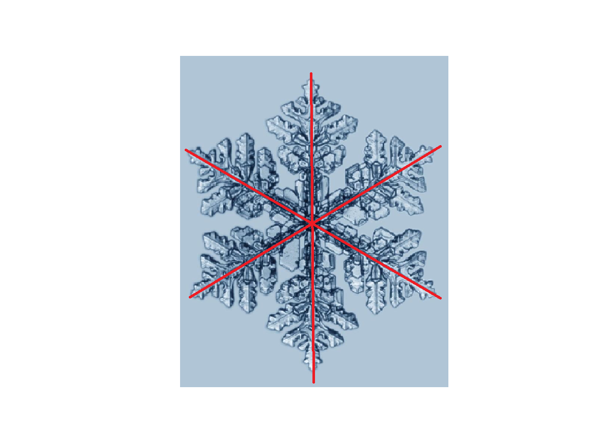
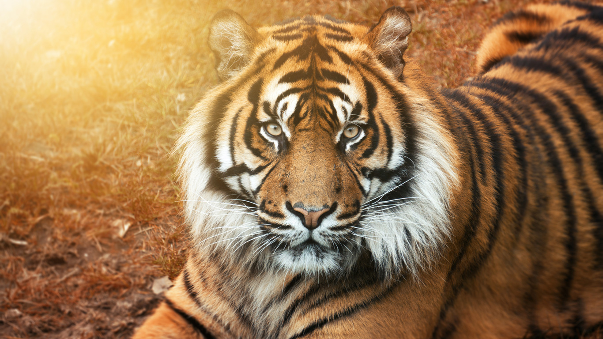
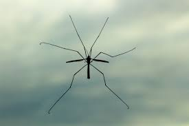
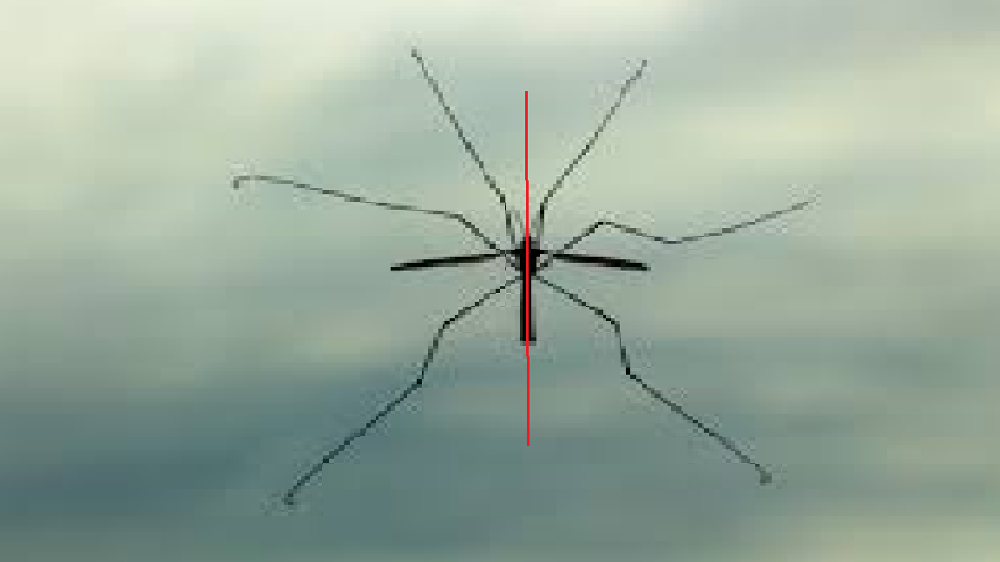
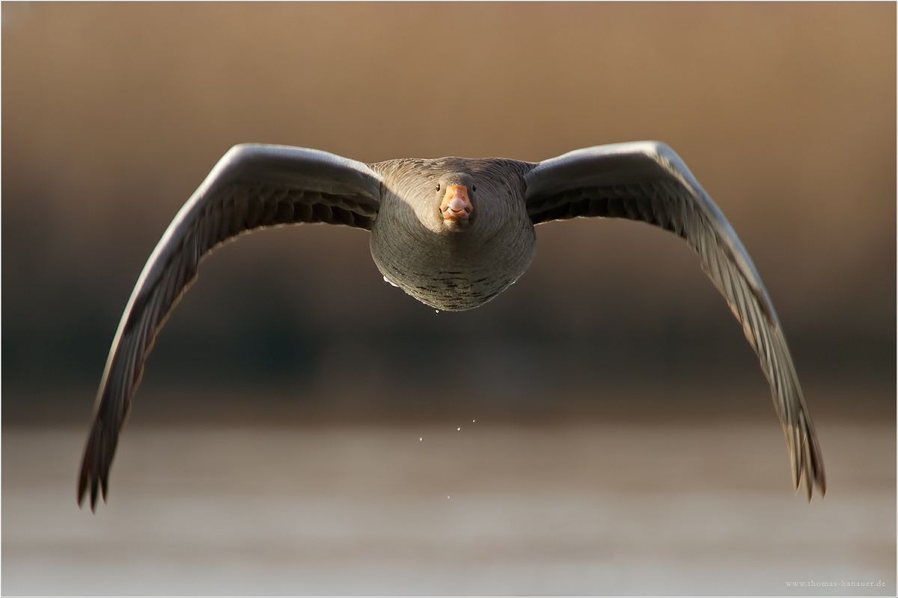
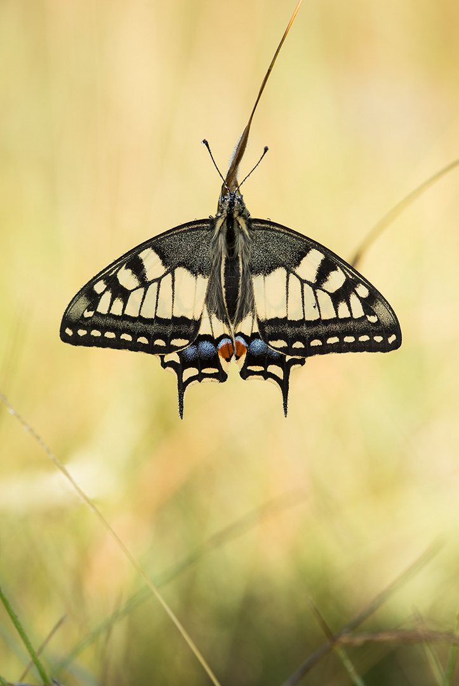

Schneeflocken sind z.b symmetrisch
Das ist eine Schnneflocke ohne Symmetrieachsen

und das ist eine Schneeflocke wo die Symmetrieachsen eingezeichnet wurden.

Jetzt kommen Tierbeispiele.Es werde Beispiele mit und ohne symmetreiachse gezeigt.
Tiger


Insekt


Vogel


Schmetterling


Danke fürs Lesen!